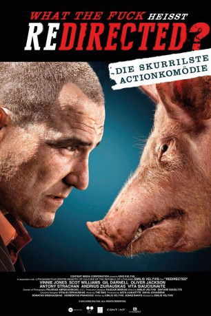

gesehen am 19.09.2015
gesehen am 19.09.2015Alternativ: Redirected gesehen am 19.09.2015
 
 IMDB-Wertung: 6.7 / 10
IMDB-Wertung: 6.7 / 10  Metascore:
Metascore: 
Für Michael sollte es eigentlich ein besonders schöner Tag werden, hatte er doch geplant, seiner Freundin einen Heiratsantrag zu machen. Doch als ihn seine drei Freunde John, Ben und Tim zu einem Auflug mitnehmen, nimmt das Unheil seinen Lauf. Denn plötzlich soll er den Dreien als Fluchtwagenfahrer bei einem Überfall auf ein Gangster-Casino zur Seite stehen. Es gelingt den Möchtegern-Räubern zwar das gewünschte Geld zu erbeuten, doch bei der Flucht nach Malaysia wird ihr Flug wegen eines Vulkanausbruchs nach Litauen umgeleitet. Ehe Michael weiß, was wirklich los ist, wacht er schließlich blutüberströmt in einem Hotelzimmer in Litauen auf. Von seinen Freunden fehlt jede Spur. Und so muss er sich nicht nur auf die Suche nach ihnen machen, sondern sich auch mit den beklauten Killern um den aufbrausenden "Golden Pole", billigem Bier, Prostituierten, korrupten Cops und der litauischen Mafia herumschlagen.
Jahr: 2014
Dauer: 99 Minuten
FSK: 16
Land: England Studio: Filmconfect Home EntertainmentTonspuren: DTS - ,
Untertitel:
Auflösung: 1080p (1920x808) Größe: 7833 MB
Genre: Action, Komödie, Krimi, Thriller
Regisseur: Emilis Velyvis
Drehbuch: Jonas Banys, Lewis Britnell, Emilis Velyvis
Soundtrack: Paulius Kilbauskas, Domas Strupinskas
Darsteller:
 Vinnie Jones als Golden Pole
Vinnie Jones als Golden Pole Lee Nicholas Harris als Singing Drunk Scottish Football Fan#1
Lee Nicholas Harris als Singing Drunk Scottish Football Fan#1 Andrius Paulavicius als Yelling driver
Andrius Paulavicius als Yelling driver Mindaugas Papinigis als Vova
Mindaugas Papinigis als VovaDatei: X:\2014(N-Z)\Redirected - Ein fast perfekter Coup (2014, FSK16, 1920x808).mkv seit 14.09.2015
Festplatte: HD 2013(I-Z)-2014(A-Z)
 Es gibt insgesamt 163 Filme in der Gruppe '2014(N-Z)'
Es gibt insgesamt 163 Filme in der Gruppe '2014(N-Z)'